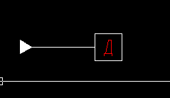

При ее выполнении задаются две точки:
первая — на опорной стороне треугольника базы;
вторая — в центре квадрата базы.

Рисунок 1 — Результат выполнения команды BAS.
Символы базы в прямоугольнике проставляются в алфавитном порядке.
Для редактирования символа базы используйте стандартные средства редактирования ACAD.
Для установки текущего генерируемого символа базы используйте команду INDEX.
Смотри также команды: